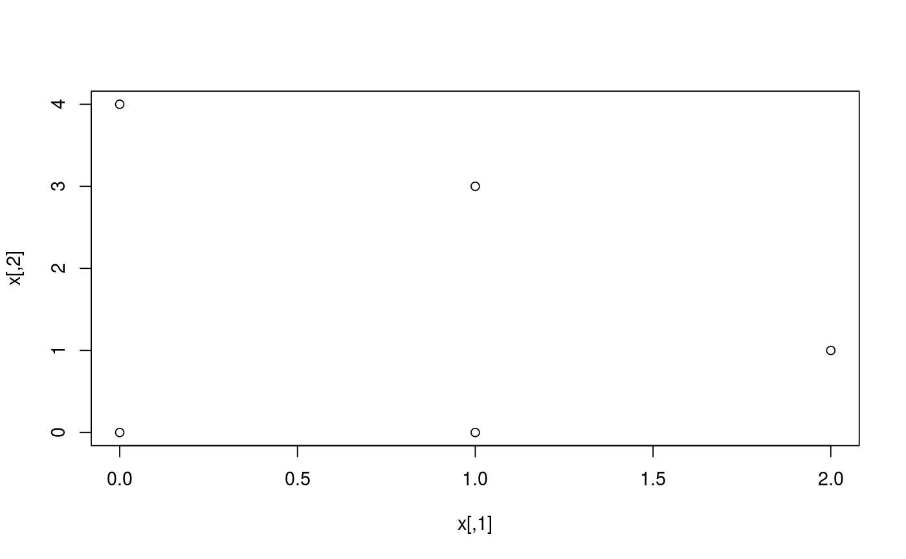

Get the k nearest neighbors for each location, including the location itself.
This function calls dist, so the options for the
distance measure used is the same as for that one. Distances are calculated
between rows.
coords_to_knn(x, k = min(10, nrow(x)), method = "euclidean", p = 2)
| x | a numeric matrix, data frame or |
|---|---|
| k | The number of nearest neighbors, counting the location itself. |
| method | the distance measure to be used. This must be one of
|
| p | The power of the Minkowski distance. |
An integer matrix of the \(k\) nearest neighbors for each location. Each row corresponds to a location, with the first element of each row being the location itself. Locations are encoded as integers.
x <- matrix(c(0, 0, 1, 0, 2, 1, 0, 4, 1, 3), ncol = 2, byrow = TRUE) plot(x)coords_to_knn(x)#> [,1] [,2] [,3] [,4] [,5] #> 1 1 2 3 5 4 #> 2 2 1 3 5 4 #> 3 3 2 1 5 4 #> 4 4 5 3 1 2 #> 5 5 4 3 2 1